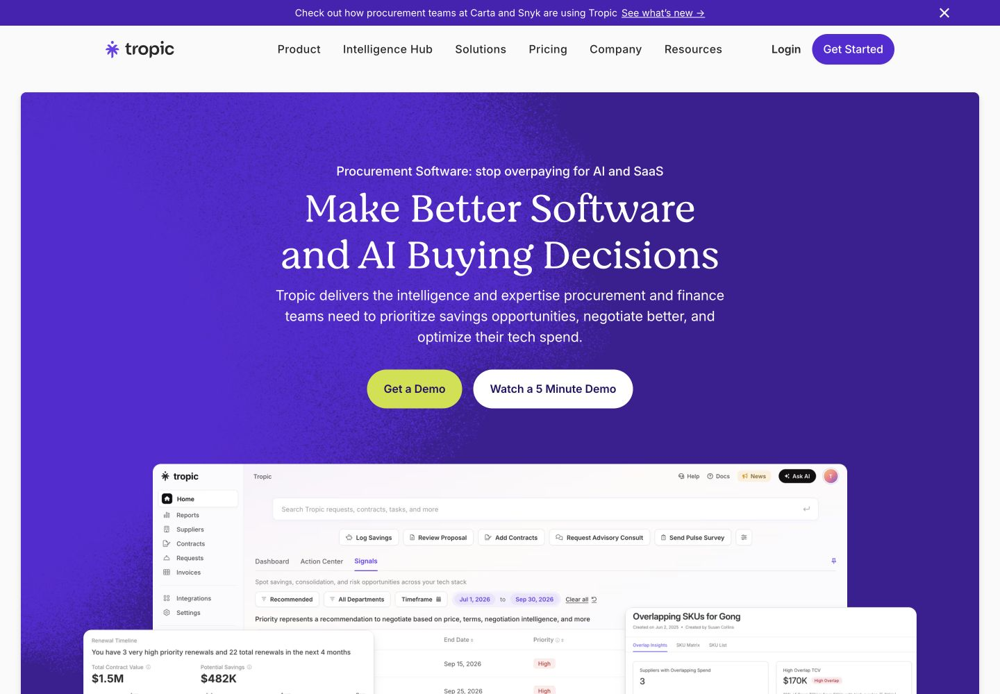
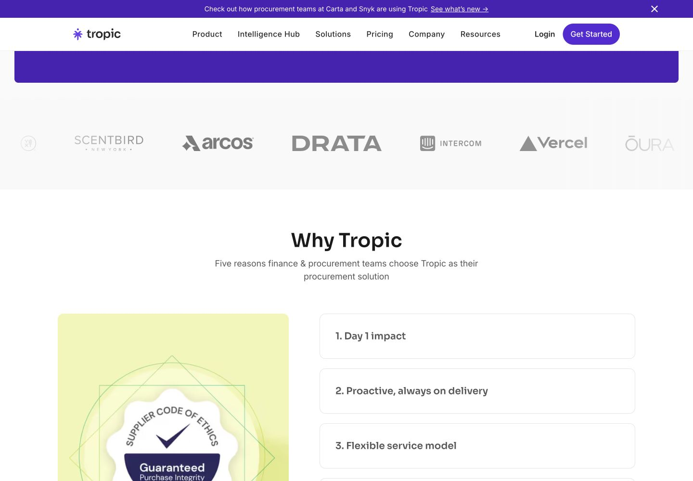
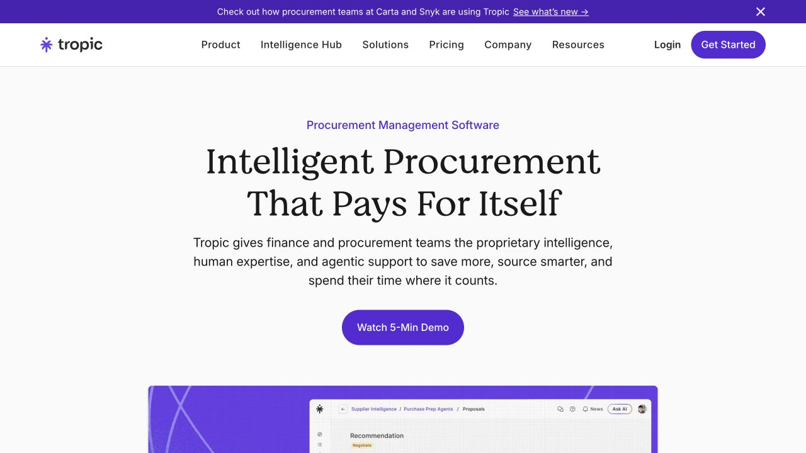
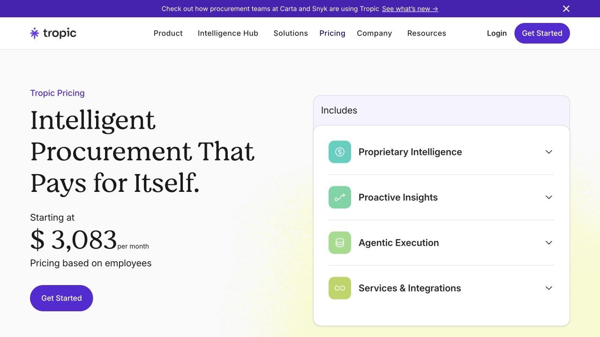
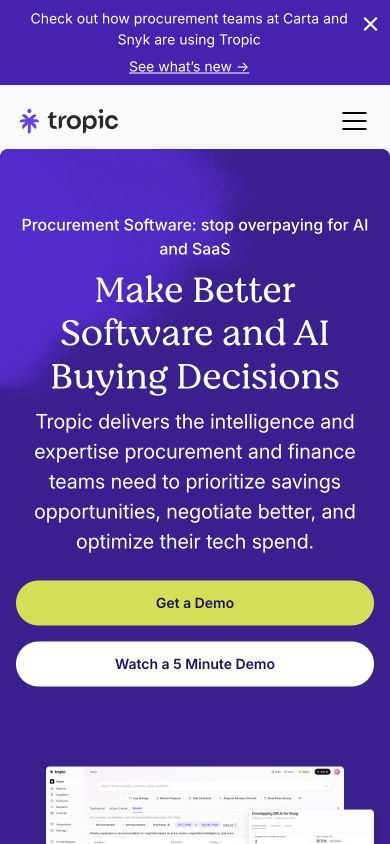
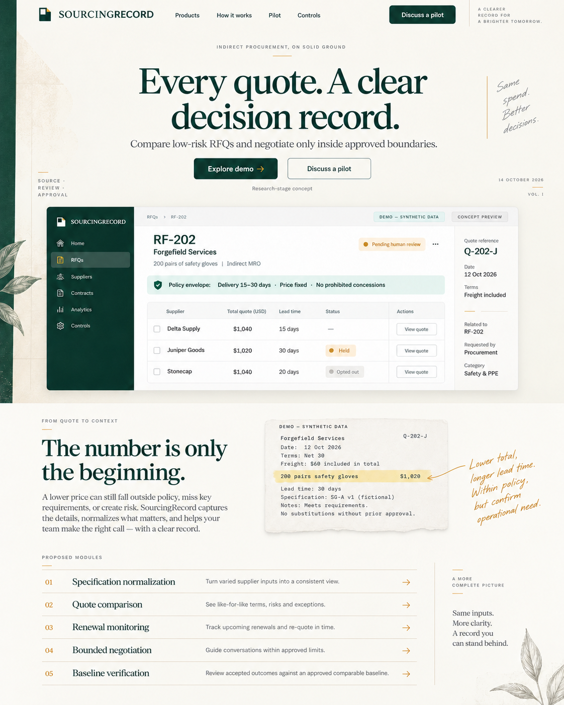
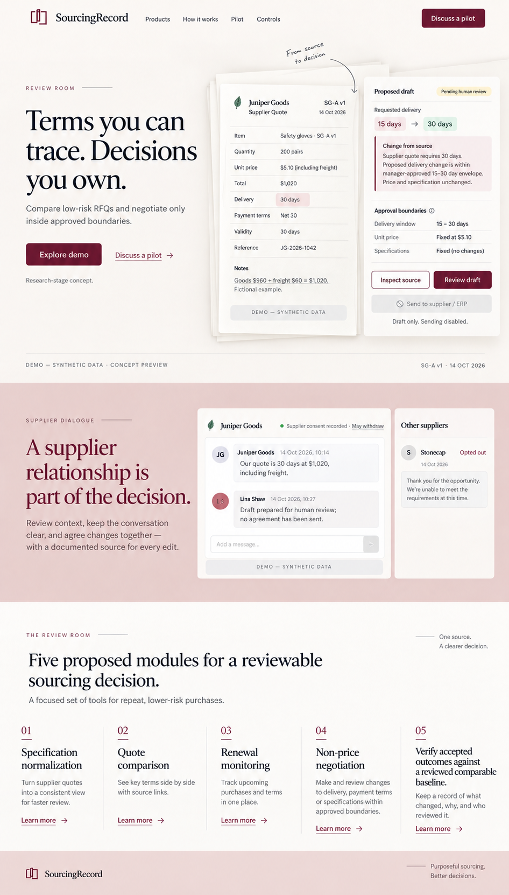
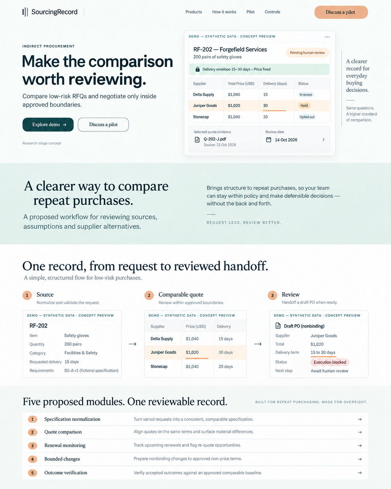

Source
Document tabs, clean excerpts, reference IDs and marginal annotations. Every highlighted figure has an inspectable origin.
A close study of Tropic and three original directions for a premium procurement website.
Recommended theme: Commercial Ledger. Warm paper, deep pine, restrained ochre, expressive editorial typography, and a source-linked comparison as the signature visual. The design should feel considered and approachable while making the procurement decision easy to inspect.
Tropic gives a dense commercial subject a more welcoming presentation. Its homepage combines a large serif statement, a rich color field, clearly separated actions, and actual product content. The contrast between expressive marketing and functional UI makes the page feel both approachable and capable. These are observations and design interpretations from the live page, rather than a claim about its conversion performance. Tropic homepage.

| Ingredient | Observed treatment | Why it works visually | SourcingRecord adaptation |
|---|---|---|---|
| Hero frame | A nearly full-width purple field is inset from the light page, with modest rounded corners and substantial breathing room. | The opening has a clear boundary and a single dominant visual hierarchy. | Use an editorial paper field and a purposeful source record; let deep pine anchor selected chapters rather than fill every section. |
| Expressive typography | Moranga is declared on the hero heading; Intervariable on navigation, body and actions; Sora appears on a lower section heading. | The opening has character while UI labels remain practical. | Use two font families: one expressive serif and one neutral functional sans. Set data in tabular numerals. |
| Action contrast | Lime primary action and white secondary action against purple. Pill-shaped buttons with generous height. | The visitor can distinguish a guided demo from a short product tour. | Give Explore demo and Discuss a pilot clear hierarchy. Deep pine on ivory can provide contrast without replicating the purple/lime pair. |
| Product presence | The dashboard enters below the hero copy with additional product-detail crops. | The offer becomes tangible quickly, and specific product details support the larger statement. | Show RF-202, supplier alternatives and a policy envelope. Use one coherent record instead of unrelated charts. |
| Varied section rhythm | The page alternates brand-color chapters, light explanations, resource treatments, proof, audience stories, FAQ and footer. | Changing composition gives the long page a reading rhythm. | Alternate quote spread, source margin, ruled product index, review panel, supplier transcript and pilot scope. |
| Human texture | The inspected “Why Tropic” section includes document-like and product imagery beside numbered expandable reasons. | A financial workflow gains tactile and editorial context. | Use original synthetic source excerpts, precise annotations and document tabs. Any paper texture stays behind noncritical visuals. |
| Content depth | Platform, product, use-case, pricing, demo and company destinations carry distinct explanations. | The website supports a buyer beyond the first impression. | Retain all five offer pages, controls, supplier experience, baseline method and pilot intake from the existing IA. |

In its 3 May 2023 redesign account, Tropic describes making B2B purchasing feel easier and more enjoyable. Its palette and gradients were inspired by a beach landscape at night. The useful lesson is that the visual system had a governing idea. That account is historical evidence, not documentation of a new 2026 redesign.
Tropic credits internal marketing and design leadership. Industrious Design’s project account describes assisting with prototyping and Webflow development. These sources support an internal creative direction with external assistance; they do not establish authorship of every current page.
Keep the expressive type, useful previews, generous spacing, specific job explanations and distinct conversion paths. SourcingRecord’s proof should be an inspectable method: source, assumption, exception and reviewer. Tropic’s customer wall, outcome figures, awards, integrations and service promises belong to its own business and are unsuitable substitutes for SourcingRecord evidence.
Measurements below come from computed styles of visible elements on the inspected desktop homepage. They are element-specific CSS values, not a recovered official brand system. Font-family declarations also include fallbacks; they do not establish license permissions.
| Element | Observed value | Design takeaway |
|---|---|---|
| Hero display heading | Moranga; 56px; weight 300; line-height 67.2px; measured width 652px in the inspected 1440px view. | Controlled reading width and generous line-height; character comes from the typeface rather than excessive size. |
| Navigation | Intervariable; 16px; weight 500; 24px line-height. | Comfortable navigation text, restrained density. |
| Hero category label | Intervariable; 18px; weight 500; 27px line-height. | A useful category statement precedes the larger promise. |
| Primary hero button | 56px tall; 16px Intervariable; weight 600; 98px border radius; background rgb(206,225,47), equivalent #CEE12F; text #241065. | Readable label, generous target, high visual contrast. These exact colors are Tropic observations. |
| Lower explanation heading | Sora; 40px; weight 600; 52px line-height in the inspected section. | Tropic varies typographic voice across page roles. SourcingRecord should use a simpler two-family system. |
| Mobile hero | Verified 390×844 viewport: menu replaces desktop navigation; headline reflows; actions stack at near-full width; product preview follows copy. | The mobile story is vertically ordered. Build separate legible supplier views rather than shrinking a desktop table. |



The company name suggests a record that a buyer can revisit: what was requested, where each number came from, what changed, and who approved it. That is a stronger visual foundation than a general “AI procurement” aesthetic.
Brand character: observant, measured, commercially fluent, clear and approachable. The website should feel like a well-designed sourcing journal brought into a modern workspace.
Document tabs, clean excerpts, reference IDs and marginal annotations. Every highlighted figure has an inspectable origin.
Aligned quote rows, consistent units, quiet exception highlights and explicit unknowns. Tables are part of the brand language.
Redlines, version markers, a defined envelope and a human checkpoint. Status indicates what remains unresolved.
Signature scene: a source line aligns with its comparable quote row, the delivery exception is highlighted, and a reviewer opens the nonbinding draft. The same record continues through the page. This gives motion, imagery and copy a shared subject.
Logo direction: a carefully spaced SourcingRecord wordmark with an original small record-tab or paired-page mark. Test it in monochrome and at favicon scale. Avoid shields, certification seals, generic checkmark logos and ornate monograms. The image concepts contain exploratory marks; a selected direction requires editable vector development.
Selection order for the revised set: 1 — Commercial Ledger; 2 — Review Room; 3 — Sourcing Atlas.
The three images shown in chat are exploratory homepage compositions. They share the buyer, five-module scope and fictional record, while varying the page hierarchy, product framing and visual system. The named directions below are internal art-direction labels, not new products.
Composition: an expressive central statement leads to a wide comparison workbench. Source notes sit in an editorial margin; a lower document excerpt connects the abstract promise to one concrete row. Five modules form a quiet ruled index.
Typography proposal: Fraunces for display; a neutral sans such as Inter for body and UI, subject to later licensing and rendering checks. UI text stays functional and legible; handwriting, if retained, is a tiny optional annotation accent, never essential information.
Why it fits: this is the clearest relationship between SourcingRecord’s name and the product story. It retains Tropic’s warmth and confidence through type, spacing and a strong product scene. It can support a broad website without relying on generic imagery.
Refinement: keep paper texture subtle and remove decorative foliage from the final system unless it serves a specific original identity purpose. Unit and total cost labels must follow the deterministic data specification. Any standards or supplier-brand details in concept imagery are not approved facts.

Composition: split hero with an original source document and draft redline beside the headline; supplier dialogue becomes the next major chapter. The product’s authority boundary is visible before a visitor scrolls.
Typography proposal: Newsreader display paired with a neutral sans such as Inter for UI. Clear text hierarchy, small rules and controlled line lengths create a contemporary commercial editorial feel.
Why it fits: it makes negotiation and supplier experience emotionally understandable. The palette is distinctive within procurement and fits review, terms and relationship-sensitive decisions.
Refinement: do not let the theme suggest a legal-services company. Keep quote comparability and all five modules prominent. Supplier consent is simulated evidence; final conversation copy must stop before agreement or sending.

Composition: a direct headline and highly readable comparison lead into an aligned source-to-review sequence. Fine source connectors and small index markers provide structure. The page feels operational and calm.
Typography proposal: Manrope for functional headings/body; Newsreader for occasional editorial section headings. Keep two families and reserve the serif for emphasis.
Why it fits: this direction offers the clearest bridge between marketing and a future product workspace. It is useful if the buyer prioritizes operational legibility over atmosphere.
Refinement: avoid drifting into a generic teal SaaS template. Protect the evidence-column motif and deliberately varied page composition. Use original explanatory copy rather than fabricated customer quotations.

| Page or section | Visual composition | Product evidence |
|---|---|---|
| Homepage | Expressive hero → wide evidence spread → editorial source chapter → five ruled offers → review sequence → supplier view → pilot panel. | RF-202 remains the recurring record; no unsupported ROI or customer-proof strip. |
| Bids Desk | Raw request and normalized line as a two-page spread. | Pack size, quantities, fixed specification and unresolved fields. |
| Bids Review | Comparison table with a quiet reference margin. | Three suppliers, eligibility, cost basis and lead-time exception. |
| Bids Proof | Dated clause excerpt and notice timeline. | Source version, calculated review date and unknown effective date. |
| Bids Signal | Nonbinding redline with policy envelope and supplier-side transcript. | Approved non-price terms, consent, opt-out and reviewer hold. |
| Bids Report | Transparent baseline worksheet and draft handoff. | Comparable purchase, adjustments, review costs and excluded offers. |
| Controls | Authority rules and blocked-action states as a clean editorial matrix. | Who may approve; what remains prohibited; prototype limitations. |
| Pilot and intake | Bounded scope panel with a spare labeled form. | Hypothetical price, selected offer, named owner, category and explicit opt-in. |
| About and resources | Readable article layouts, short chapter labels, source notes. | Research thesis, current stage and documented evaluation method. |
The palette can distinguish the overall brand from functional statuses. Forest, oxblood or petrol are brand accents; amber, red, green and neutral status roles need separate accessible tokens. A brand-color highlight must never mean approved by itself.
The observed Tropic “Why” accordion changes visible explanation; logo strips changed position across observations; the product-page preview changed its highlighted focus between captures. Those observations establish visible state changes, not a measured animation specification or timing system. Reduced-motion behavior and full keyboard accessibility were not audited.
| Proposed SourcingRecord interaction | Purpose | Mobile and reduced-motion behavior |
|---|---|---|
| Quote row → source | Selecting a supplier highlights its source reference and opens the excerpt. | Source opens as a labeled detail view; immediate highlight with no motion requirement. |
| Pack normalization | Show boxes and pairs resolve into the approved base unit, with assumptions visible. | Before/after rows remain readable; no information depends on animation. |
| Envelope → redline | Reveal the permitted 15-to-30-day delivery change and explain why it is held. | Explicit user-controlled step; no automatic approval. |
| Supplier opt-out | Change the draft to blocked and show the reason. | Status text and next action update clearly; no color-only signal. |
| Five-module index | On hover/focus, a small matching visual explains the selected module. | Every module is visible as a link; touch opens its own page. |
Use short, restrained transitions around 180–300ms as proposed implementation values, not Tropic measurements. Avoid forced scrolling, repeated parallax, intro delays and automatic moving counters. Mobile uses a compact record header, labeled supplier cards, accessible evidence/review tabs and stacked CTAs; it does not shrink a desktop dashboard.
Research used the configured Perplexity high preset for first-party page architecture and historical brand rationale, then direct browser captures and computed styles to verify the current visual treatment. Desktop homepage and mobile hero/menu were inspected; platform, pricing and proposal pages were viewed; the demo-request form loaded and was inspected without entry or submission. Company, use-case and product-branch content was researched through official pages. No buyer research or conversion-performance audit was conducted.
Images are generated visual-direction mockups created with the built-in Image Gen tool and grounded in the actual Tropic captures. They are not implementation screenshots and must not be used as evidence that SourcingRecord operates. The accompanying prompt record preserves the generation and correction instructions.
Read the prior complete research and IA. This visual study refines its art direction while retaining its content and product boundaries.